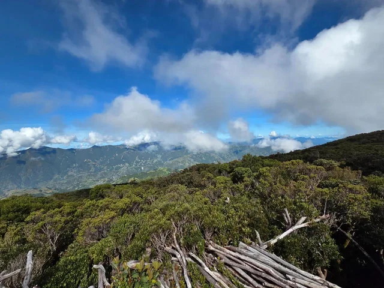
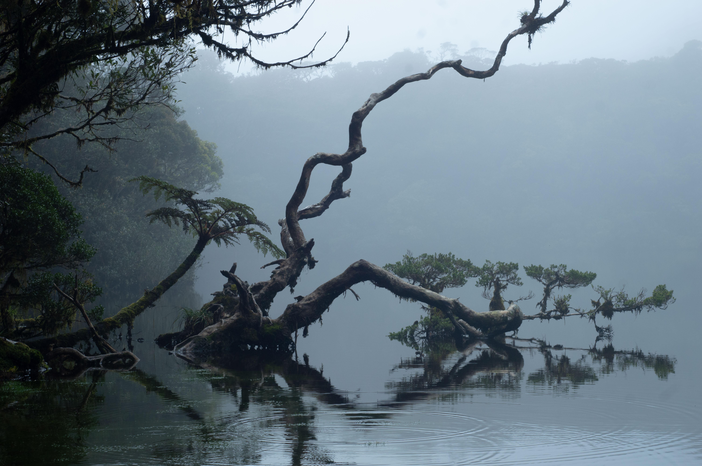
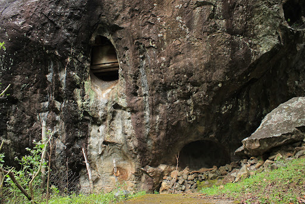
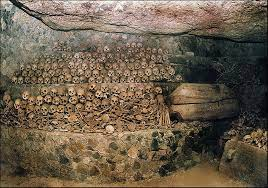

Mount Tabayoc
The second highest peak in Luzon, offering pristine forests and panoramic views.
Mount Pulag
Known as the "Playground of the Gods," famous for its sea of clouds.

Kabayan Fire Mummies
Ancient burial caves preserving cultural heritage through unique mummification.

Four Lakes of Kabayan
Discover Bulalacao, Latepngap, Inmulung, and Tabeyo Lakes.

Tinongchol Burial Rock
A sacred site with coffins carved from pinewood, reflecting ancient traditions.

Opdas Burial Cave
A cave housing centuries-old skeletal remains, offering a glimpse into Kabayan’s past.